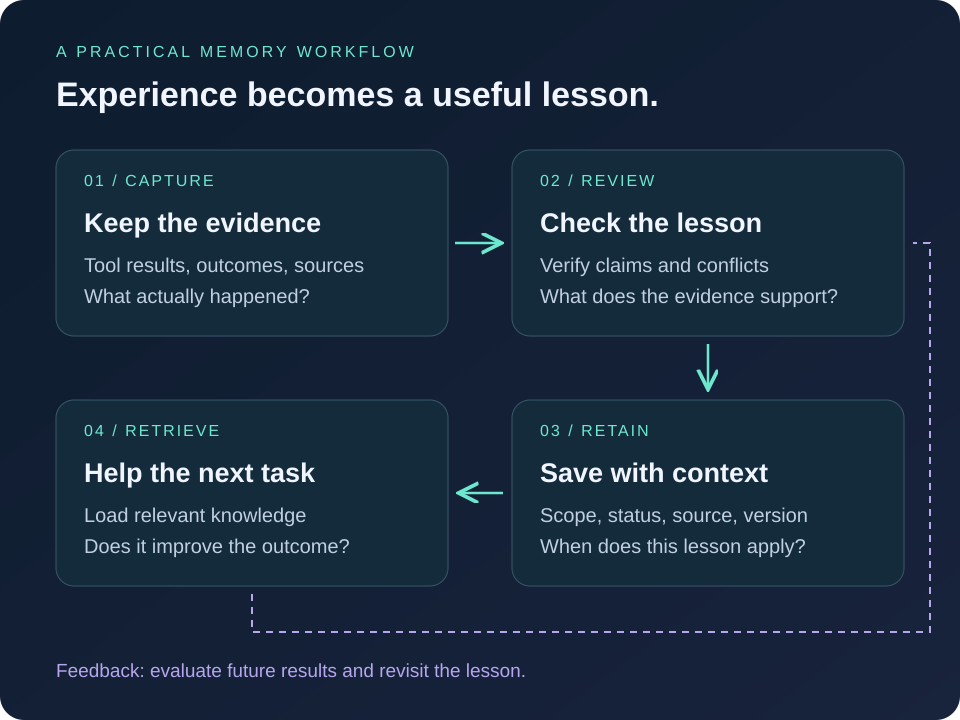

Agent architecture · Memory systems
Agent memory: what survives the next session?
From working context to durable knowledge: follow one lesson through capture, verification, retrieval, and evaluation—with a practical record you can adapt.
A coding agent solves a difficult bug on Friday. On Monday, a fresh session repeats the same investigation. Saving the conversation would preserve the history, but the next agent still needs to find the relevant lesson, understand when it applies, and check whether the code has changed.
That is the practical challenge of agent memory: deciding what experience should influence future work. Recent writing from Anthropic, Google, OpenAI, and Letta offers useful perspectives. The terminology overlaps, but the mechanisms differ. Understanding those differences helps us design a system we can inspect and improve.
First, separate storage from working context
For the external-memory systems discussed here, the model can use a stored lesson only when the application makes it available in a model call—for example, by inserting it into the prompt or returning it through a tool. Writing a file does not, by itself, make a future session aware of its contents.
- Working context
- The information supplied for the current model call: instructions, selected messages, tool results, and retrieved material. Its size is bounded by the model’s context window.
- Session history
- The record of an interaction. An application may preserve more history than it sends in any single call, selecting or compacting it as the conversation grows.
- Durable memory
- Information retained across sessions. It can live in ordinary files, database rows, or another store. Persistence describes its lifetime, not its accuracy.
- Retrieval
- The process of finding stored information relevant to a task. Retrieval connects the durable store to the agent’s working context.
A second distinction concerns what is remembered. Semantic memory holds facts or preferences; episodic memory holds experiences; procedural memory holds instructions or methods. These categories, also used in LangChain’s memory documentation, describe the information’s role, not three mandatory databases. In our coding example, a failed test run is an episode, a verified fact about the fixture is semantic knowledge, and a diagnostic checklist is procedural guidance.
What the provider examples show
Anthropic: organize experience between sessions
In The components of agent memory, published on 6 November 2026, Anthropic describes retained knowledge stored outside model weights. Its hierarchy contains searchable transcripts, notes, representations such as wikis, and context loaded into new sessions.
“Dreaming” uses background computation to revisit that material: check notes against transcripts, develop representations, and decide what deserves space in future context. The injected layer should stay small. This is maintenance of external knowledge, rather than retraining the underlying model.
The post also describes limits: wikis may add little over search, notes can become stale, and maintenance costs compute.
Sleep-time compute: spend effort before the next request
Letta’s sleep-time compute work, developed with UC Berkeley researchers, explores using downtime to process available context ahead of future interactions. An agent can prepare knowledge while the user is away, then reuse that prepared context when work resumes. Anthropic explicitly credits this work in its discussion.
This moves preparation ahead of the request. Its value depends on whether that work helps later; background computation still needs a budget.
Google: distinguish external memory from learning in weights
Google offers two relevant examples. Memory Bank provides external, persistent memory for agents, including extraction, consolidation, and retrieval. This belongs in the application architecture: the service manages information that an agent can access across interactions.
Google Research’s sleep framework, published on 27 October 2026, works at a different level. It studies continual learning through alternating active and sleep phases. During sleep, the system updates numerical weights in pre-allocated memory components and uses generated practice examples. Its consolidation and dreaming stages aim to integrate knowledge and improve reasoning while limiting forgetting.
The shared sleep metaphor therefore covers different operations. Editing an external note changes what an application retrieves. Updating weights changes the model’s learned parameters. A team building on a hosted model API can control its own memory store; that does not give it access to the model’s internal training cycle.
OpenAI: separate continuing a run from improving future runs
OpenAI’s memory and compaction cookbook draws a useful distinction. Compaction reduces the active conversation while preserving working state for later turns. Memory carries reusable lessons into future runs.
In its evidence-review example, memory stores workflow guidance, while case findings belong in a reviewed artifact. This illustrates why “the agent remembered it” is insufficient evidence for a conclusion. It is also an application pattern, not proof that every OpenAI product uses the same background architecture.
Where hill climbing fits
Here, hill climbing means local search: propose a nearby candidate, evaluate it, and keep an improvement. For an agent workflow, the candidate might be a revised prompt, a skill instruction, or a code patch. The evaluation supplies the score that guides the search.
Memory consolidation answers another question: what should the agent retain and how should it organize that information? It does not inherently supply an objective function or guarantee that a change improves performance. These mechanisms can be combined.
| Question | Hill climbing | Memory consolidation |
|---|---|---|
| What changes? | A candidate solution or configuration. | Retained information and its organization. |
| What guides the change? | An evaluation score. | Evidence, relevance, and a retention policy. |
| What can go wrong? | Local optima or optimizing an incomplete score. | Unsupported conclusions, lost detail, or stale rules. |
| How do they work together? | Tests a proposed improvement. | Preserves the evidence and lessons for later work. |
A basic greedy search can get stuck at a local optimum. That does not mean every evaluation loop is irreversible, uses flat files, or must accumulate context. Those are separate design choices. Likewise, a background memory pass can repeat an earlier error if it treats a confident summary as verified evidence.
One lesson, from discovery to reuse
Consider a hypothetical coding agent debugging checkout.integration in a project called Storefront. The test times out while waiting for a seeded customer. The following events, identifiers, and results are illustrative; they are not measurements from a deployed system.
1. Capture an observation without inventing its cause
On Friday, increasing the timeout makes one run pass. Save the failing trace, the changed configuration, and the passing result. The candidate note should say: “A longer timeout coincided with a passing run; cause unconfirmed.” It should not conclude that every checkout test needs a longer timeout.
2. Check the candidate against evidence
During review, the agent notices that the original trace shows the fixture becoming ready after the test began. That supports a hypothesis about readiness. To test it, the agent restores the original timeout, adds an explicit readiness check, and repeats the test under the recorded configuration. Suppose those runs pass. The lesson can now describe a supported fix for that setup, while retaining the links needed to inspect the evidence.
3. Save a record the next session can evaluate
This illustrative JSON record uses application-defined fields. It is a suggested schema, not a provider API or a universal standard:
{
"id": "checkout-fixture-readiness",
"version": 2,
"scope": {
"project": "storefront",
"test": "checkout.integration",
"fixture_version": "v3"
},
"lesson": "Check fixture readiness before changing timeouts.",
"status": "verified_for_recorded_setup",
"evidence": [
"runs/example-041/trace.json",
"patches/example-readiness-fix.diff",
"runs/example-042/repeat-results.json"
],
"last_checked": "2026-11-08",
"recheck_when": [
"fixture implementation changes",
"the same symptom has different trace evidence"
],
"supersedes": "checkout-fixture-readiness@1"
}Scope prevents a project-specific fix from becoming universal advice. Evidence allows the consumer to audit it. Status expresses what was actually checked; a confidence score alone cannot establish truth. Last checked and recheck conditions identify when validation may be needed again. Version and supersedes preserve the correction history without keeping the old hypothesis active.
These fields only help if application code and the agent’s workflow use them. A recheck_when field does not automatically detect a code change. The application must compare versions or ask the agent to inspect the current fixture before relying on the lesson.
4. Reuse it in a new session
On Monday, another checkout timeout occurs. The application retrieves this note within Storefront’s scope. It supplies the lesson, its applicability conditions, and evidence references. The agent checks the current fixture version and trace before choosing a fix. The useful memory is a diagnostic lead with supporting evidence, rather than an instruction to repeat Friday’s patch.
5. Handle the day the lesson stops applying
Later, fixture v4 introduces a readiness guarantee. A new timeout is caused by a slow payment stub. If the old note is injected without its scope, the agent may waste time adding redundant readiness checks. The application should flag the version mismatch and exclude the note from active guidance, or retrieve it explicitly as historical evidence. A reviewed replacement can supersede it.
When two notes disagree, keep the disagreement visible until evidence resolves it. Newer does not automatically mean more accurate. If records must be deleted, also remove their retrieval-index entries and cached copies under the application’s retention policy.
How a stored memory reaches the model
For this example, I would implement retrieval as five explicit decisions. This is a proposed design that can be built with files or a database; no particular framework is required.
- Establish access and scope. Use the authenticated user and selected project to restrict the search space. Enforce access before exposing memory content to the model.
- Find candidates. Search for the test name, symptom, and relevant component. Exact identifiers and natural-language descriptions may need different retrieval methods.
- Check applicability. Exclude superseded records from active guidance; compare versions, verification status, and recheck conditions. Uncertain records can be returned as hypotheses when explicitly labeled.
- Select within a context budget. Rank relevant candidates, remove duplicates, and include only what fits the task. Keep qualifiers and source references attached when shortening a record.
- Deliver and verify. Return selected records through a tool or a memory section in the prompt. For a consequential decision, inspect the linked evidence or current environment before acting.
| Starting option | Useful for | Tradeoff to test |
|---|---|---|
| Files and direct lookup | A small collection with known project or test identifiers. | Simple to inspect; naming and organization must stay useful as it grows. |
| Keyword search | Error strings, function names, and exact terminology. | May miss relevant notes phrased differently. |
| Semantic search | Finding related descriptions despite different wording. | Similarity can surface a plausible but inapplicable record. |
| Hybrid search and reranking | Collections needing both precise identifiers and conceptual matches. | Adds indexing, ranking, and evaluation work. |
Anthropic’s contextual retrieval research explores combining embedding retrieval, keyword retrieval with BM25, and reranking. These are retrieval techniques; none by itself proves that a memory is true, current, or authorized for the user.
Begin with the smallest method that finds the evidence reliably. Upgrade when missed or irrelevant retrievals show a concrete need. A vector database stores and searches representations; it does not decide what the agent should believe.
A small memory workflow you can evaluate

For an initial implementation, I would keep the design explicit and easy to inspect. The following is a proposed workflow, not a claim that all providers implement these steps:
- Capture evidence. Save relevant tool results and outcomes with a task identifier and timestamp.
- Record a candidate lesson. Include its scope, source, and whether it is observed, inferred, or verified.
- Review after a useful milestone. Check conflicting notes against evidence. Leave unresolved disagreements visible.
- Publish a versioned memory update. Preserve a way to inspect and reverse the change.
- Retrieve for a specific task. Supply the lesson with enough context to judge its applicability.
- Measure the next session. Compare outcomes with a baseline that can search the original evidence.
Use separate memory scopes for different users and projects. A lesson from one repository may be wrong in another. Retention and deletion should be deliberate, and retrieved text should remain evidence rather than acquiring authority to override the application’s instructions.
Test whether memory improves the next session
Build memories from an earlier set of tasks, then evaluate on later tasks that the memory-building process has not seen. Freeze that memory snapshot for the comparison. Otherwise, the agent may appear to learn when it is simply recalling the evaluation answer.
| Condition | What the agent receives | What it tests |
|---|---|---|
| A: No past experience | Current task, current project, and ordinary tools. | Whether it can solve the problem from current evidence alone. |
| B: Searchable history | The same setup, plus search over earlier traces. | The value of access to prior evidence. |
| C: Curated memory | The same setup as B, plus scoped, reviewed lessons. | The additional value of consolidation over history search. |
Run all three conditions on a recurring fixture problem, a payment-stub timeout with a similar description, a task in another repository, and a task after the fixture version changes. The memory system should help with the first case without pushing the old fix onto the others.
Hold the model, current project state, tools, grading criteria, and task budget constant. Reset between cases, and repeat runs where outputs vary. If you also want to test adaptation during a sequence of tasks, run that as a separate experiment with an explicit update policy.
- Task success: did the patch pass the relevant tests without introducing a regression?
- Retrieval quality: was the applicable lesson found, and were unrelated or obsolete notes kept out of active guidance?
- Behavior: did the agent verify the lesson’s applicability, or blindly repeat a previous fix?
- Efficiency: how many tool calls and tokens were used, and how long did the task take?
- Total cost: include memory creation, review, indexing, storage, and retrieval—not just the final model call.
If C is faster than B but no more accurate, the benefit is efficiency. If C repeats a stale fix more often, consolidation is harming reliability. If the right memory was retrieved but ignored, the issue is how the agent uses context, not necessarily the search index. Inspect traces to distinguish these failures before adding more infrastructure.
A useful memory system earns its place through better future behavior. Start with one recurring failure, retain the evidence needed to understand it, and check whether the next session handles it better.
Continue reading
Build the measurement side with an evaluation loop for your AI agent, or explore how context reaches the model in how agent turns work. The provider comparisons above link directly to their source material; the coding example and proposed workflow are illustrative.
Join the discussion
Share a question, correction, or something you learned. Sign in with GitHub to comment.
Comments powered by Giscus. You can also browse the discussions on GitHub.